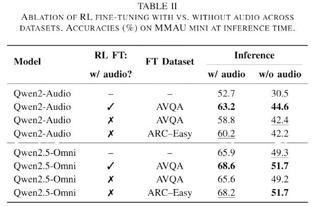
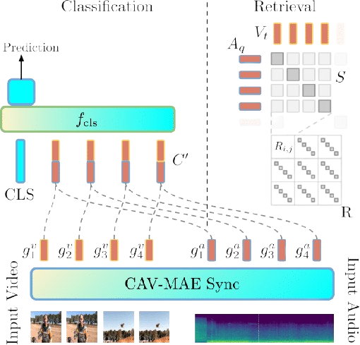
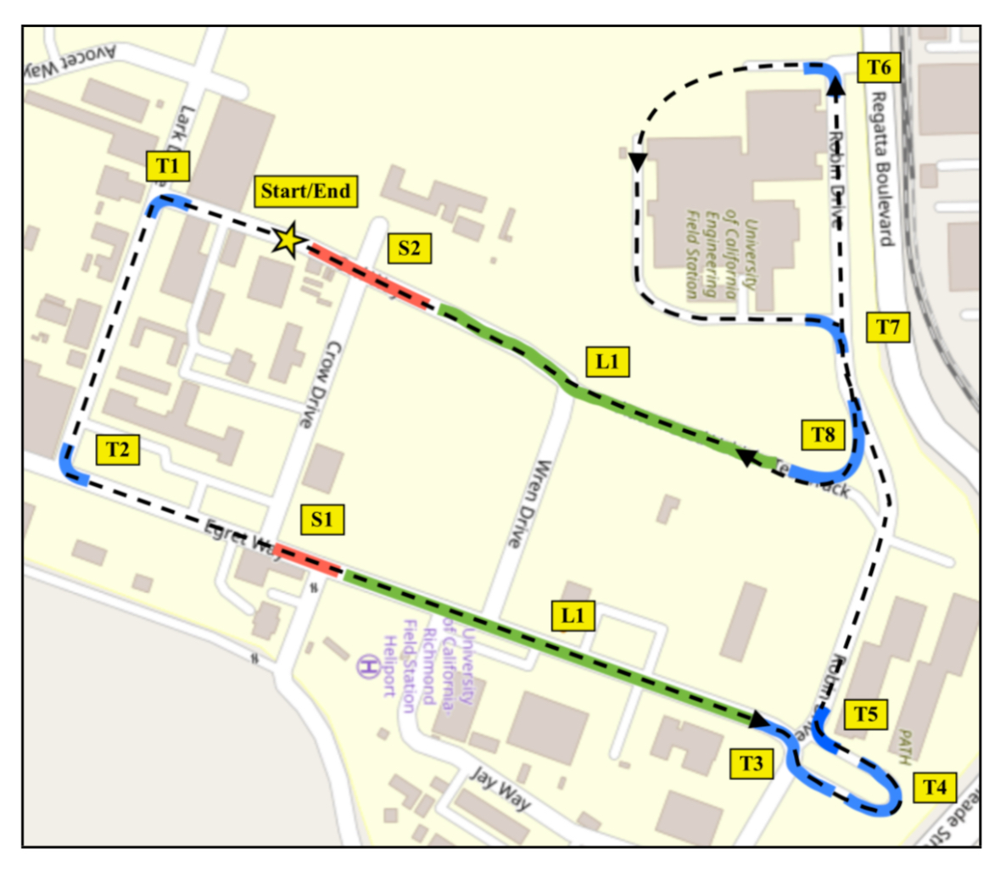

Edson Araujo
I'm a PhD Student at University of Tübingen, working with Prof. Hilde Kuehne. Our work is part of the MIT-IBM Watson AI Sight and Sound Project, where I focus on audio-visual reasoning, multimodal large language models, and test-time adaptation.
I did my Master's in Computer Science at UFMG under the supervision of Prof. Erickson Nascimento, period in which I was able to collaborate in different research topics such as video summarization and image descriptors.
Email: [first_name]@[last_name].info

News
12.2025 We are organizing the fifth edition of the "What is Next in Multimodal Foundation Models?" Workshop (CVPR 2026)
08.2025 Omni-R1 was accepted to ASRU 2025! (shortlisted for Best Student Paper!)
05.2025 Omni-R1, our latest work from the MIT-IBM Watson AI Sight and Sound Project, is out on ArXiv!
05.2025 CAV-MAE Sync is also going to be presented at the LatinX, MMFM and Sight and Sound Workshops at CVPR 2025!
02.2025 CAV-MAE Sync was accepted to CVPR 2025 as a poster presentation. Paper is on ArXiv.
Research
I'm interested in audio-visual reasoning, multimodal large language models, self-supervised learning, and test-time adaptation. Some papers are highlighted.
Selected Publications

|
AVRT: Audio-Visual Reasoning Transfer through Single-Modality Teachers
Under review
Generates high-quality audio-visual reasoning traces from single-modality teachers. Achieves superior performance on OmniBench, DailyOmni, and MMAR benchmarks. |

|
TTA-Vid: Test-Time Adaptation for Long Instructional Videos
Under review
Adapts video-language models at test time using step-by-step frame reasoning and multi-armed bandit frame selection. No labels required. |
|  |
Omni-R1: Do You Really Need Audio to Fine-Tune Your Audio LLM?
ASRU 2025
Fine-tunes Qwen2.5-Omni using GRPO, achieving SOTA on MMAU. Surprisingly, text-only fine-tuning also improves audio performance. |
|  |
CAV-MAE Sync: Improving Contrastive Audio-Visual Mask Autoencoders via Fine-Grained Alignment
CVPR 2025
Fine-grained audio-visual alignment using temporal sequences instead of global representations. Outperforms complex architectures on retrieval, classification, and localization. |

|
Text-Driven Video Acceleration: A Weakly-Supervised Reinforcement Learning Method
TPAMI 2023
Weakly-supervised RL method for text-driven video acceleration using VDAN+ architecture. |
|
Straight to the Point: Fast-Forwarding Videos via Reinforcement Learning Using Textual Data
CVPR 2020
RL-based video acceleration using textual guidance and the VDAN architecture. SOTA on F1 and segment coverage. |
|
|
Personalizing Fast-Forward Videos Based on Visual and Textual Features from Social Network
WACV 2020
Personalized FPV fast-forwarding using social network data to infer user interests. |
|
|  |
On Modeling the Effects of Auditory Annoyance on Driving Style and Passenger Comfort
IROS 2019
Detects driver annoyance from inertial measurements with 77% accuracy. Studies acoustic impact on driving style. |